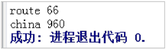

首页 > 编程笔记
Go语言映射（map）的创建和使用
映射（map）是一种特殊的数据结构，用于存储一系列无序的键值对，映射基于键来存储数据。映射功能强大的地方是，能够基于键快速检索数据。键就像索引一样，指向与该键关联的值。
与 C++、Java 中的映射的不同之处在于，Go语言使用映射不需要引入任何库，而 C++、Java 需要先引用相应的库，因此，Go语言的映射使用起来更加方便。
在Go语言中，最常用的创建并初始化映射的方法有两种：
请看下面的例子：
映射的键可以是任何值，这个值的类型并不限制，内置的类型或者结构类型都可以，不过需要确定这个值可以使用
需要注意的是，切片、函数及包含切片的结构类型由于具有引用语义，均不能作为映射的键，使用这些类型会造成编译错误，例如：
只遍历键时，使用下面的形式：
如果需要特定顺序的遍历结果，正确的做法是先排序，例如：
[brazil china route]
在以上代码中：
sort.Strings 的作用是对传入的字符串切片进行字符串字符的升序排列。
使用 delete() 内置函数从 map 中删除一组键值对，delete() 函数的语法格式如下：
例如，从 map 中删除一组键值对的代码如下：
从结果中可以看出，使用 delete() 函数将 brazil scene 从 map 中删除了。
Go语言中并没有为 map 提供任何清空所有元素的函数、方法，清空 map 的唯一办法就是重新使用 make() 函数构建一个新的 map，不用担心垃圾回收的效率，这是因为Go语言中的并行垃圾回收效率比写一个清空函数要高效得多。
总结一下映射的特性：
与 C++、Java 中的映射的不同之处在于，Go语言使用映射不需要引入任何库，而 C++、Java 需要先引用相应的库，因此，Go语言的映射使用起来更加方便。
创建映射
map 是引用类型，其语法格式如下：var mapname map[keytype]valuetype
对格式的说明：- mapname 为 map 的变量名。
- keytype 为键类型。
- valuetype 为键对应的值类型。
注意：[keytype] 和 valuetype 之间允许有空格。
在声明映射时不需要知道 map 的长度，因为 map 是可以动态增长的，未初始化的 map 的值是 nil，使用函数 len() 可以获取 map 中键值对的数目。在Go语言中，最常用的创建并初始化映射的方法有两种：
- 使用内置的 make() 函数创建映射。
- 使用字面量创建映射。
请看下面的例子：
//创建一个映射,键的类型是string,值的类型是int
dict := make(map[string]int)
//创建一个映射,键和值的类型都是string
//使用两个键值对初始化映射
dict := map[string]string{ "red": "#da1337","orange": "#e95a22"}
使用映射字面量是更常用的方法，映射的初始长度会根据初始化时指定的键值对的数量来确定。映射的键可以是任何值，这个值的类型并不限制，内置的类型或者结构类型都可以，不过需要确定这个值可以使用
==运算符做比较。需要注意的是，切片、函数及包含切片的结构类型由于具有引用语义，均不能作为映射的键，使用这些类型会造成编译错误，例如：
//创建一个映射,使用字符串切片作为映射的键
dict := map[[]string]int{}
这种写法编译器容易报错：
Compiler Exception:
invalid map key type []string
//创建一个映射,使用字符串切片作为值
dict := map[int][]string {}
映射的遍历
Go语言 map 的遍历过程可以通过使用 for range 循环来完成，例如：
scene := make(map[string]int)
scene["route"] = 66
scene["brazil"] = 4
scene["china"] = 960
for k, v := range scene {
fmt.Println(k, v)
}
遍历对于Go语言的很多对象来说都是差不多的，直接使用 for range 语法即可，遍历时，可以同时获得键和值，如只遍历值，可以使用下面的形式：
for _, v := range scene {
将不需要的键修改为匿名变量的形式即可。只遍历键时，使用下面的形式：
for k := range scene {
此时无须将值修改为匿名变量的形式。如果需要特定顺序的遍历结果，正确的做法是先排序，例如：
scene := make(map[string]int)
//准备map数据
scene["route"] = 66
scene["brazil"] = 4
scene["china"] = 960
//声明一个切片保存map数据
var sceneList []string
//将map数据遍历复制到切片中
for k := range scene {
sceneList = append(sceneList, k)
}
//对切片进行排序
sort.Strings(sceneList)
//输出
fmt.Println(sceneList)
输出结果如下：[brazil china route]
在以上代码中：
- 第1行，创建一个 map 实例，键为字符串，值为整型。
- 第3～5行，将 3 个键值对写入 map 中。
- 第7行，声明 sceneList 为字符串切片，以缓冲和排序 map 中的所有元素。
- 第9行，将 map 中元素的键遍历出来，并放入切片中。
- 第13行，对 sceneList 字符串切片进行排序，排序时，sceneList 会被修改。
- 第15行，输出排好序的 map 的键。
sort.Strings 的作用是对传入的字符串切片进行字符串字符的升序排列。
map元素的删除和清空
Go语言提供了一个内置函数 delete()，用于删除容器内的元素。使用 delete() 内置函数从 map 中删除一组键值对，delete() 函数的语法格式如下：
delete(map, 键)
对格式的说明：- map 为要删除的 map 实例。
- 键为要删除的 map 中键值对的键。
例如，从 map 中删除一组键值对的代码如下：
package main
import "fmt"
func main() {
scene := make(map[string]int)
//准备map数据
scene["route"] = 66
scene["brazil"] = 4
scene["china"] = 960
delete(scene, "brazil")
for k, v := range scene {
fmt.Println(k, v)
}
}
运行结果如图8所示。

图8：map 元素的删除
图8：map 元素的删除
从结果中可以看出，使用 delete() 函数将 brazil scene 从 map 中删除了。
Go语言中并没有为 map 提供任何清空所有元素的函数、方法，清空 map 的唯一办法就是重新使用 make() 函数构建一个新的 map，不用担心垃圾回收的效率，这是因为Go语言中的并行垃圾回收效率比写一个清空函数要高效得多。
总结一下映射的特性：
- map 的单个键值访问格式为 mapName[key]，更新某个 key 的值时 mapName[key] 放到等号左边，访问某个 key 的值时 mapName[key] 放在等号右边。
- 可以使用 range 遍历一个 map 类型变量，但是不保证每次迭代元素的顺序。
-
删除 map 中的某个键值，语法如下：
delete(mapName,key)
delete 是内置函数，用来删除 map 中的某个键值对。 - 可以使用内置的 len() 函数返回 map 中的键值对数量。
- Go内置的 map 不是并发安全的，并发安全的 map 可以使用标准包 sync 中的 map。
- 不能直接修改 map value 内某个元素的值，如果想修改 map 的某个键值，则必须整体赋值。
关注公众号「站长严长生」，在手机上阅读所有教程，随时随地都能学习。内含一款搜索神器，免费下载全网书籍和视频。

微信扫码关注公众号